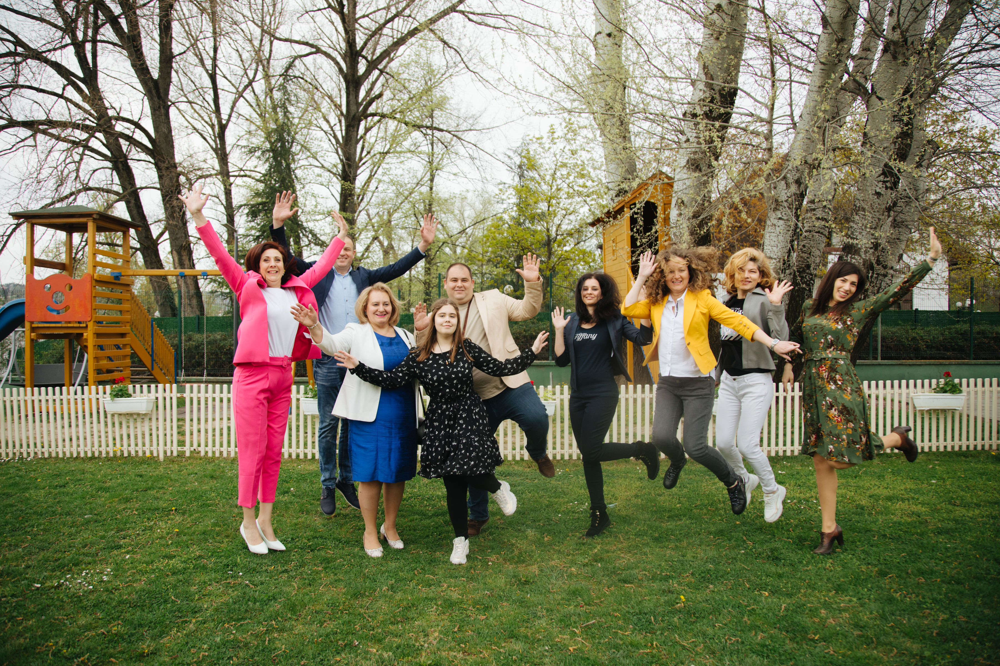

Kontaktirajte nas: 064/6789621

O NAMA
PROGRESS TEAM
Složićete se da posao koji većina ljudi danas radi neretko traje duže od 8 sati dnevno, što ih
iscrpljuje,
narušava im zdravlje, oduzima slobodno vreem za porodicu, sebe, i druge aktivnosti.
Novčana nagrada biva neadekvatna i često nedovoljna čak i za osnovne životne potrebe.
Pitam se na kakvim poslovima vi trenutno radite?
Volite li svoj posao
Da li svakodnevno uživate u njemu
Imate li dovoljno slobodnog vremena za svoju porodicu
Dovoljno para da svojoj deci i sebi priuštite putovanja, školovanje, sportske aktivnosti
Ako je vaš odgovor na većinu ovih pitanja ne. vreme da promenite svoje navike, svoje radno okruženje,
da postavite prioritete bez stresa i pritiska i počnete da zarađujete za sebe a ne za druge.

Možda i razmišljate da unesete promene u svom životu, ali su vam prepreke nedostatak novca, malo
slobodnog vremena, možda ne nailazite na podršku porodice, na neodobravanje okoline. Ili imate
sumnju kako ćete i hoćete li uspeti u svemu.
Kad donesete odluku da budete deo našeg tima ja i moj tim ćemo vam svojim stečenim znanjem i
dugogodišnjim iskustvom pomoći da obezbedite zdravlje svojoj porodici, izgradite posao, dodatni ili
osnovni, kako vama odgovara.
dr Snežana kontra, vrhunski lekar u Foreveru i dugogodišnji lider u mm na globalnom nivou, na čelu je
našeg Progres tima.
Od nje ćete na osnovu njenog ličnog iskustva dobiti jedan provereni i dokazani
sistem koji funkcioniše i koji će vam pomoći da postravite osnove svog rada
Pored nesebične podrške mentora, u našem timu ćete dobiti i potpuno besplatne edukacije na temu
online i offline poslovanja, rad na društvenim mrežama, vredne NloP edukacije od strane vrhunskih
stručnjaka. Edukacije na temu rada na ličnom razvoju i napredovanju.

Zajedno ćemo, kao tim osvajati nagradna putovanja, učestvovati u podsticajnim programima, koji će
vas uvesti u jedan kvalitetniji i zanimljiviji svet u kojem gradite sopstveni biznis a nikad niste sami
Prijavite se na moju e-mail adresu ili broj telefona, da na besplatnim konsultacijama čujete od mene nešto
više o poslu, upoznate ljude iz našeg tima, osetite našu energiju.
Tada ćete sami odlučiti da li ćete dati sebi šansu i postati sardanik kompanije ili možda samo koristiti
ove
vrhunske proizvode.
Odluka će biti samo vaša

gordana stojanovic